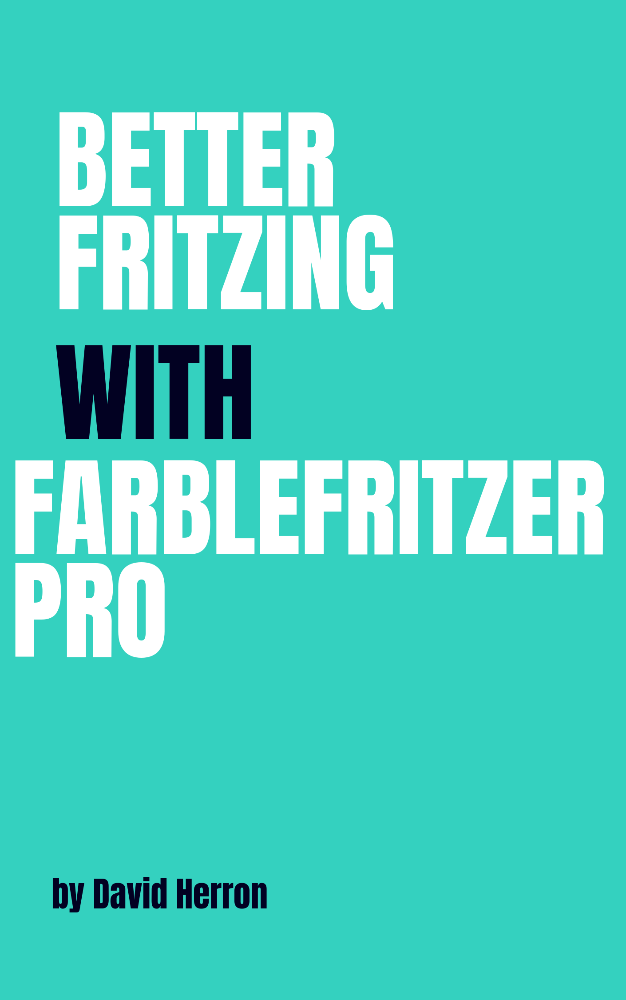

Home
Documentation
News

Sample Open Source Software Project Documentation
By David Herron
Table of Contents
Introduction to the Farblefritzer Pro
Setting up Farblefritzer Pro
Writing content with Farblefritzer Pro
Blog posts with Farblefritzero Pro
General pages with Farblefritzer Pro
Creating Documentation with Farblefritzer Pro
Deployment to website using Farblefritzer Pro
Deployment to Github Pages with Farblefritzer Pro
Layout and Theming with Farblefritzer Pro
Partial templates in Farblefritzer Pro
Styling your pages with Farblefritzer Pro
Layout and Theming with Farblefritzer Pro
Rendering
Preview locally
Deploy w/ rsync to regular server
Table of Contents
Introduction to the Farblefritzer Pro
Setting up Farblefritzer Pro
Writing content with Farblefritzer Pro
Blog posts with Farblefritzero Pro
General pages with Farblefritzer Pro
Creating Documentation with Farblefritzer Pro
Deployment to website using Farblefritzer Pro
Deployment to Github Pages with Farblefritzer Pro
Layout and Theming with Farblefritzer Pro
Partial templates in Farblefritzer Pro
Styling your pages with Farblefritzer Pro
Layout and Theming with Farblefritzer Pro